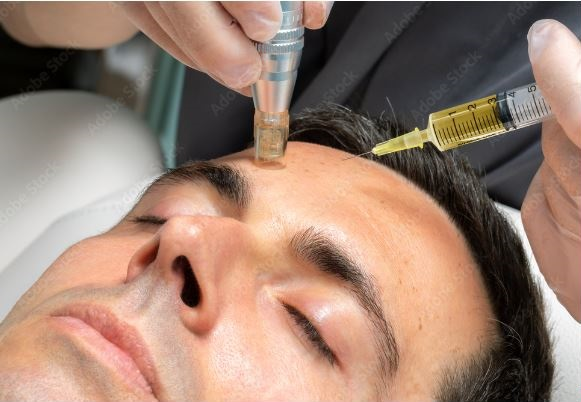

Es un tratamiento médico que consiste en la introducción de sustancias activas mediante múltiples micro-inyecciones superficiales. Permite contrarrestar y prevenir los signos de envejecimiento facial . Los resultados de la mesoterapia son visibles de forma inmediata. Su efecto terapéutico es superior al de la vía tópica y por ello es una técnica utilizada en todo el mundo por médicos especializados. Además , tiene una probada eficacia en el tratamiento capilar para combatir problemas de debilidad o la caída del cabello.
Tratamientos Corporales
Fosfatidilcolina- Lipolisis quimica
El tratamiento médico consiste inyecciones de fosfatidilcolina, un extracto derivado de la lecitina de soja que forma parte estructural de membranas celulares de nuestro cuerpo y no produce reacciones alérgicas, ya que el organismo no la reconoce como extraña, se diseña un plan de tratamiento de serie de sesiones. Las indicaciones para el uso estético de la fosfatidilcolina son limitadas y se restringen a pequeños depósitos de adiposidad localizada, en pacientes con peso ideal o con sobrepeso leve, y es conveniente complementar el tratamiento con dieta y actividad física.
Enzimas biológicas
PBSerum® Cosmeceuticals . Proteínas Enzimáticas . Enzimas Recombinantes . es una línea de cosmecéuticos que por sus características bioquímicas, su potente acción sobre el tejido cutáneo y su efecto estimulador de activos, se aproximan a la categoría de fármacos. INDICACIONES: Flaccidez, piel de naranja, celulitis, retención de líquido, adiposidad localizada, cicatrices, quemaduras.
Mesoterapia
es una técnica en medicina estética que consiste en la aplicación de microinyecciones con sustancias especificas según la necesidad de la piel de la región a tratar con eleccion del principio activo o la formula, asi podemos mediar diferentes efectos dermicos que mejoran la calidad y el aspecto de la piel. Las inyecciones son aplicadas a nivel superficial, intradérmico, a unos 3 ó 4 mm de profundidad máxima exactamente en la zona a tratar. Se realiza mediante agujas muy finas, que no suelen ser dolorosas debido a su tamaño reducido y a que se aplica muy poca medicación. Cada sesión tiene una duración de aproximadamente 30-45 minutos, ya que se realiza la preparacion previa de la piel segun el motivo de consulta y el plan de tratamiento a seguir. El número de sesiones necesarias lo acordaderemos en función de la zona a tratar y el plan de tratamiento, pero no menos de cuatro sesiones.
